Propuesta de plataforma · Octubre 2026
Cafetería
Curie
Las familias pagan con saldo o con la cuenta del día, cada compra se factura como lo pide la DGI y la caja identifica a cada alumno sin carné.
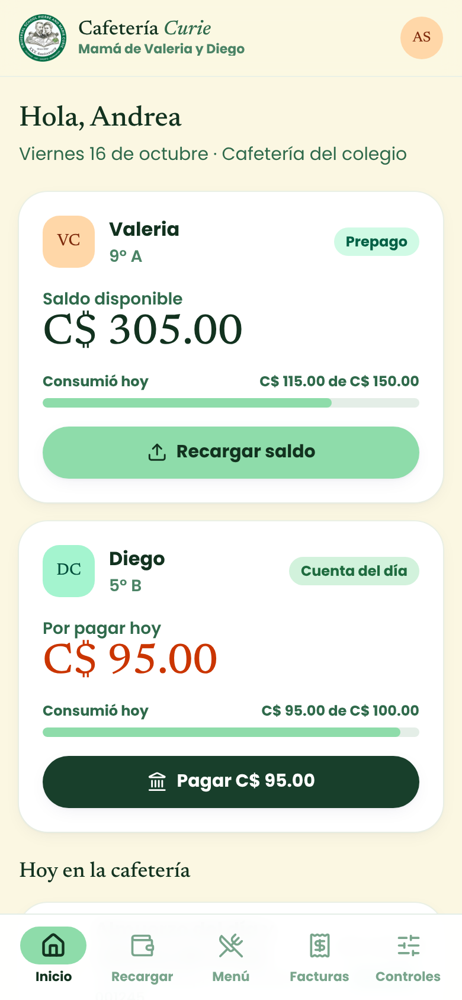
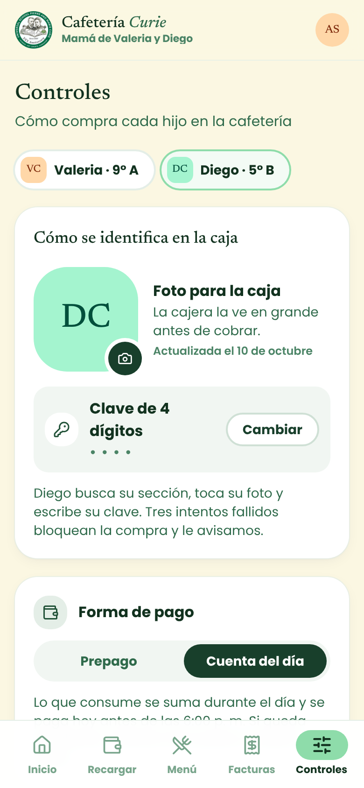
Las familias pagan con saldo o con la cuenta del día, cada compra se factura como lo pide la DGI y la caja identifica a cada alumno sin carné.


Cada requisito del sistema de facturación computarizada tiene su lugar en la plataforma.
Cada cajera, supervisora y administrador entra con su propio usuario y clave. Cada acción queda a su nombre.
Copia automática cada noche, cifrada y guardada 30 días en otra ubicación.
Cada caja tiene su serie. Los números no se editan, no se borran y no se reutilizan.
Cada factura y cada cierre muestran lo gravado, el IVA 15 % y lo exento por separado.
Se conserva el original y las copias con el sello ANULADO, el motivo y quién autorizó.
Talonario preimpreso de imprenta autorizada y registro posterior de esas facturas en el sistema.
Ningún cambio en la factura, la numeración o los impuestos se activa sin registrar antes el aviso a la DGI.
Emisor y RUC, dirección, número, fecha, cliente, detalle, totales y leyenda de autorización.
El formato final de la factura, las series y el tratamiento del IVA de cada producto se definen con su contador antes de solicitar la autorización.
Los alumnos no tienen carné, así que la caja combina lo que la cajera ve con lo que solo el alumno sabe.
La cajera elige la sección y toca la foto; el alumno escribe su clave. No necesita carné ni celular.
Lista de su sección con fotos grandes, límite diario más bajo y aviso a la familia en cada compra.
El alumno muestra un código desde la app, entrando con su cuenta de Office 365. Más rápido en horas pico.
Sin carné: un llavero o un sticker para la mochila, de bajo costo. Si se pierde, se desactiva desde la app.
Son datos biométricos de menores: requieren consentimiento expreso, equipos adicionales y más cuidado legal.
Límite diario, aviso a la familia en cada compra y bloqueo después de 3 claves incorrectas.
Cada hijo con su forma de pago: saldo prepago que se recarga, o cuenta del día que se paga ese mismo día.
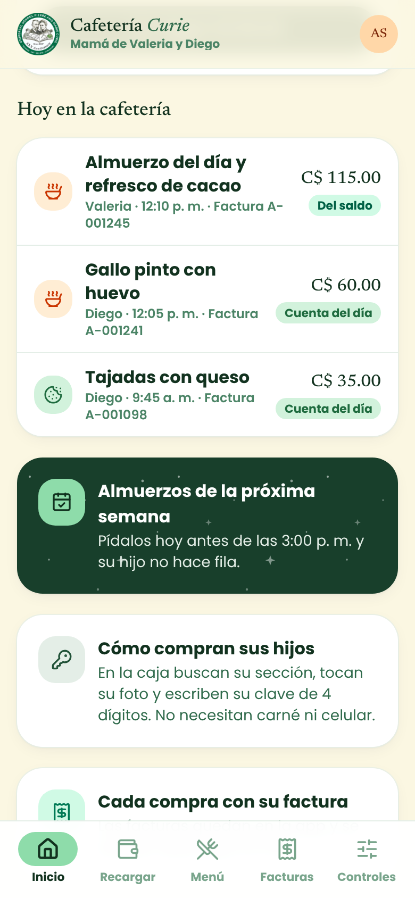
Cada compra con hora, monto y número de factura, al momento.
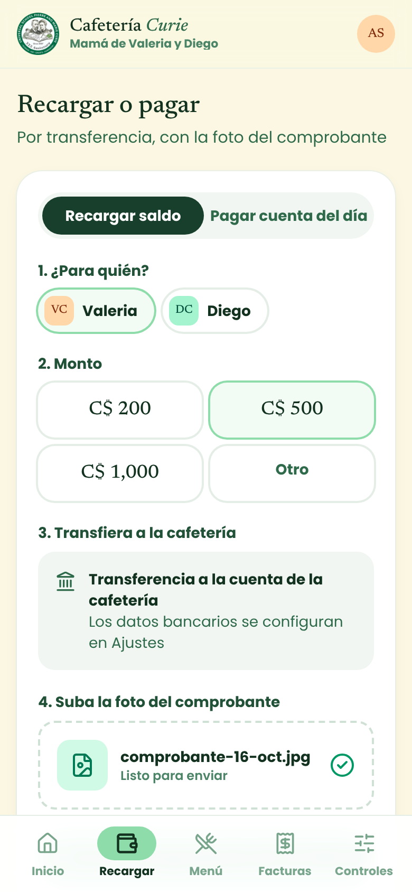
Por transferencia: la familia sube la foto del comprobante y la cafetería lo confirma.
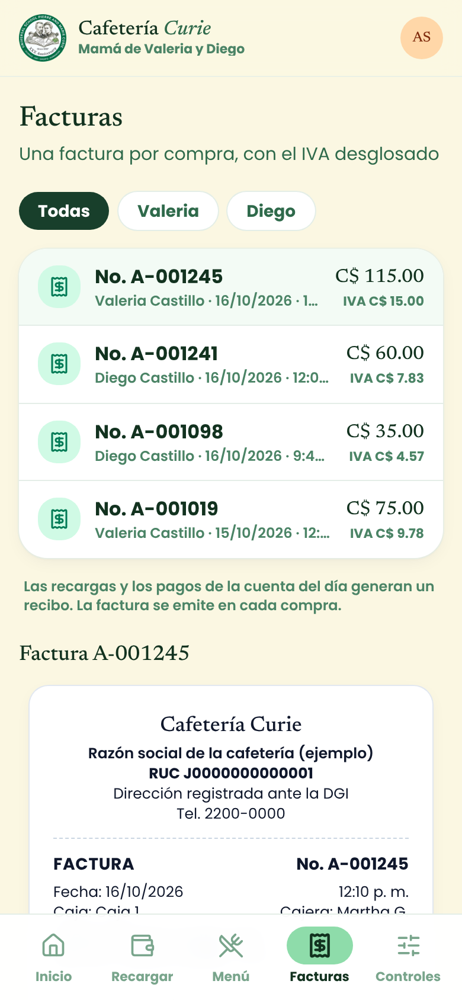
Una factura por compra, con el IVA desglosado. Se descargan en PDF.
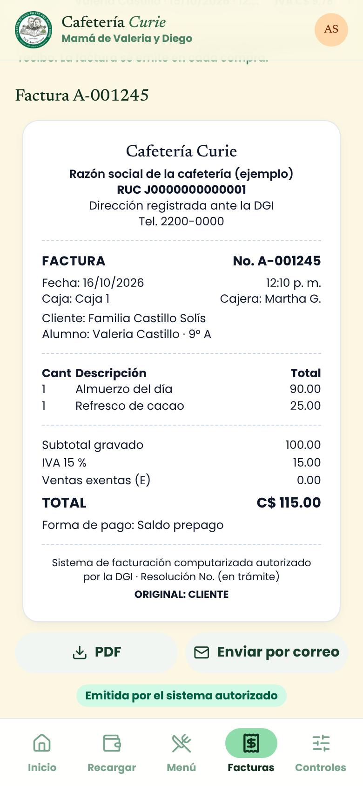
Emisor y RUC, número consecutivo, cliente, detalle e IVA por separado.
La familia sube la foto y define la clave de 4 dígitos con la que su hijo compra.
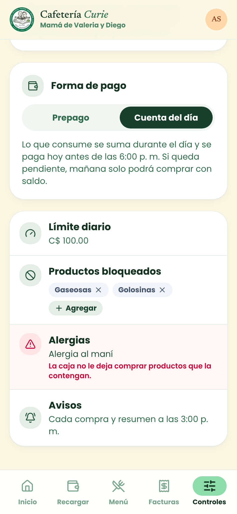
Límite diario, productos bloqueados y alergias que la caja respeta.
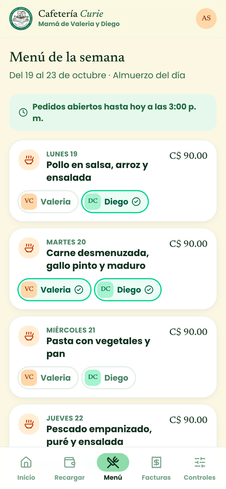
Su hijo no hace fila y la cafetería prepara lo justo.
Sin carné: la cajera elige la sección, toca la foto y el alumno escribe su clave de 4 dígitos.
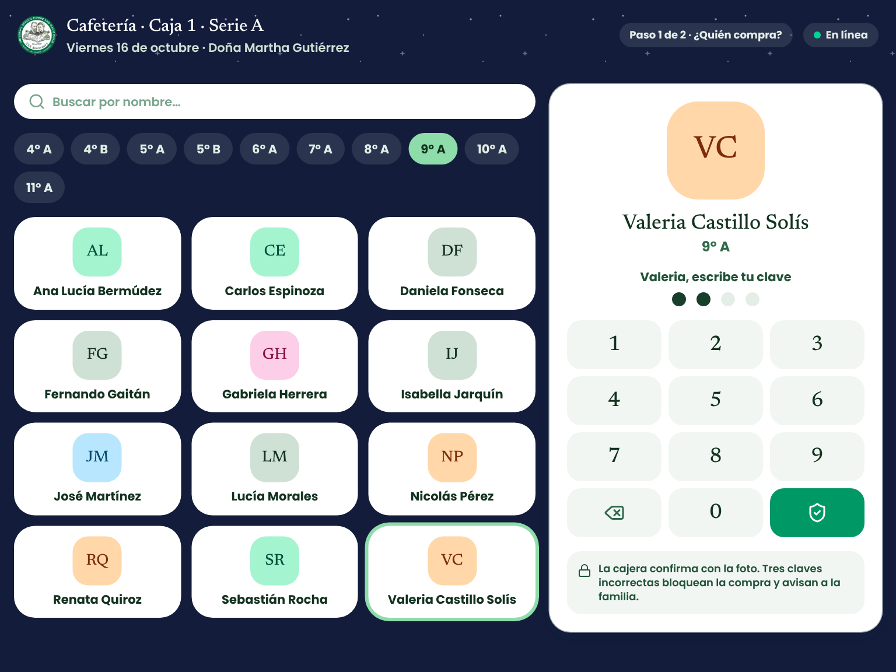
Saldo y límite del día, productos bloqueados por la familia, IVA desglosado y número de factura consecutivo.
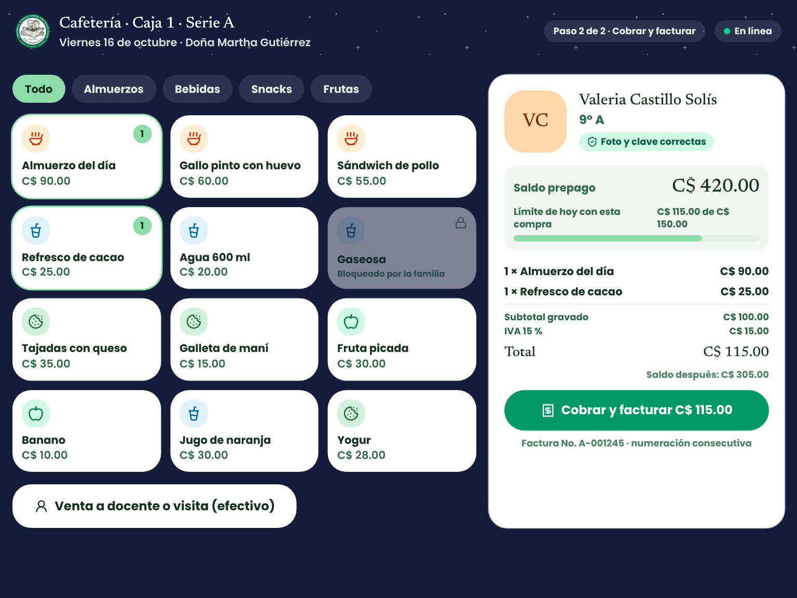
El original se imprime para el cliente, la copia queda en el archivo y la familia la ve en la app.
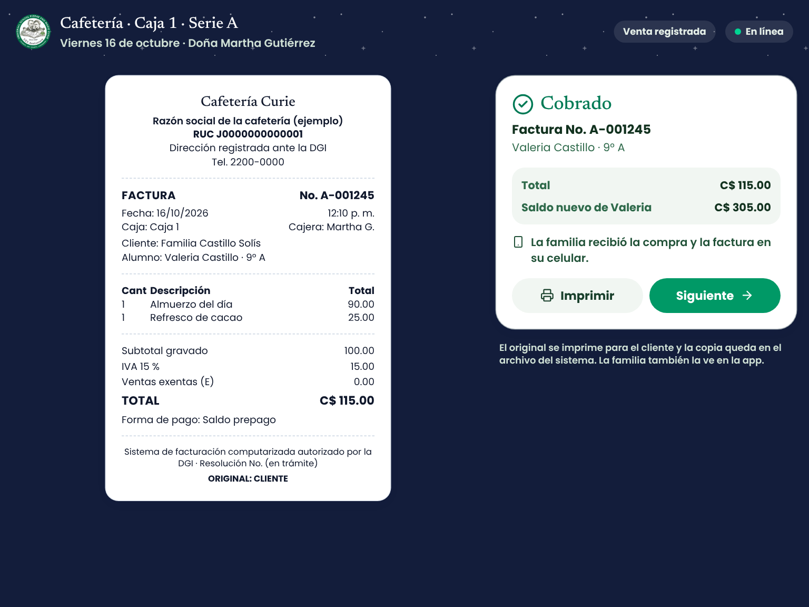
Ventas e IVA del día, facturas emitidas y anuladas, pendientes y estado de los controles fiscales.
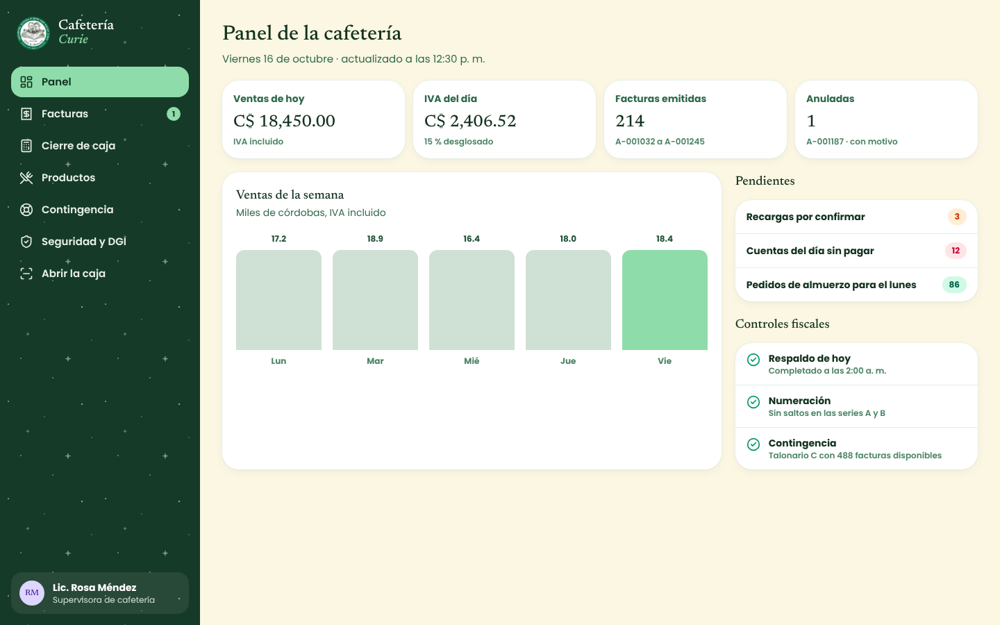
Numeración consecutiva por serie, con gravado, IVA y exento por separado. Se exporta a Excel para el contador.
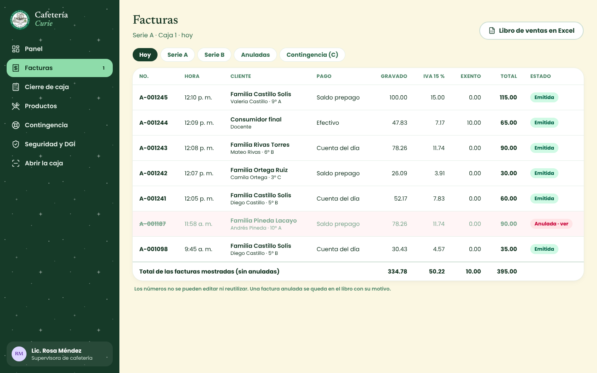
Se conservan el original y la copia con el sello ANULADO, el motivo y la supervisora que autorizó.
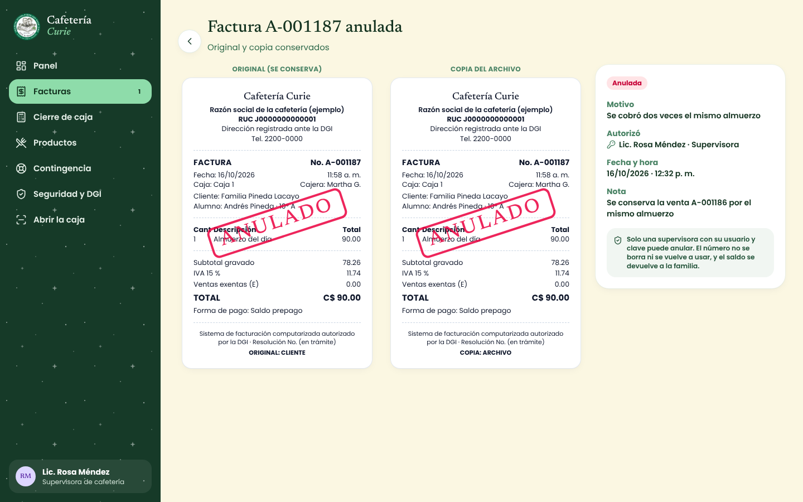
Rango de facturas del día, desglose fiscal, formas de pago y arqueo del efectivo.
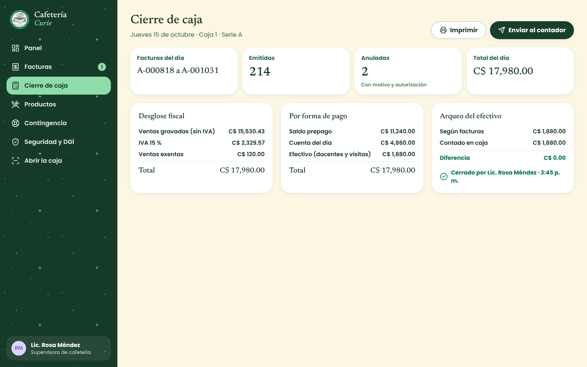
IVA 15 % o exento por producto, y alérgenos que activan las alertas de la caja.
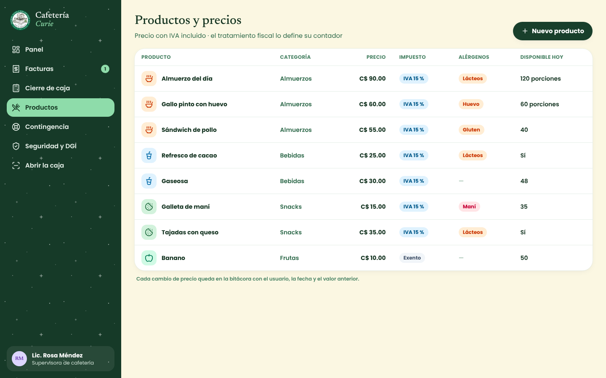
Talonario preimpreso de respaldo y registro posterior para que el libro de ventas quede completo.
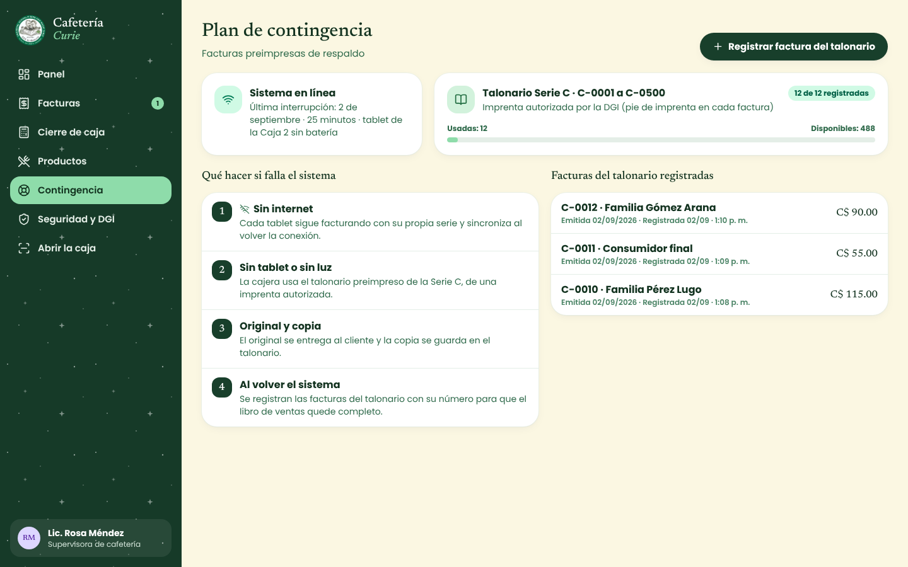
Usuario y clave por persona, respaldo diario, bitácora y versiones del sistema con aviso previo a la DGI.
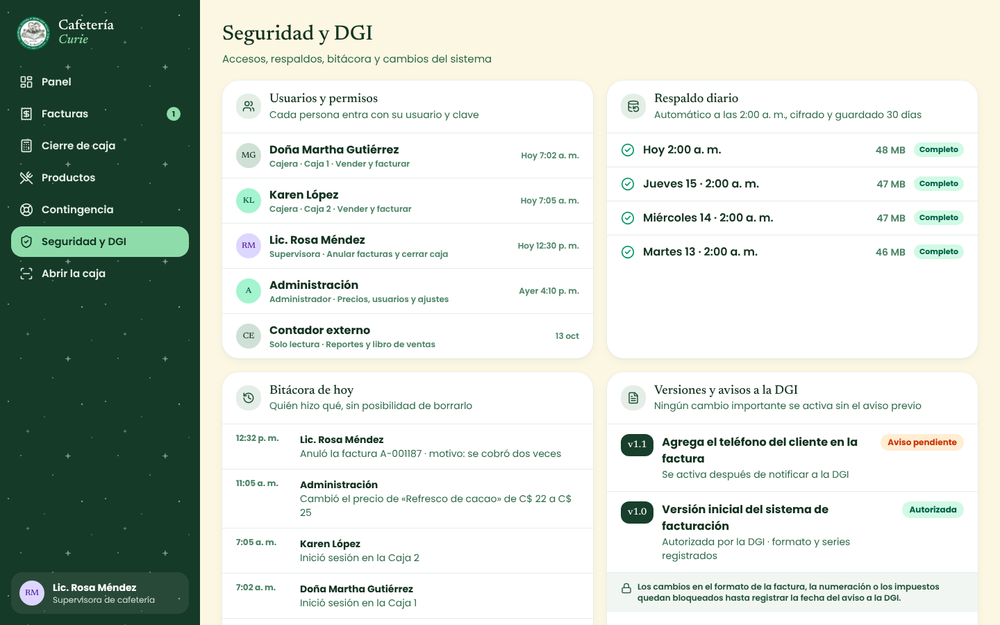
Razón social, RUC, series y formato de factura con su contador.
Solicitud del sistema de facturación computarizada y talonario de contingencia.
Familias, caja, administración y reportes.
Una semana con un grado y la caja real.
Fotos y claves de los alumnos, y capacitación a las cajeras.
Los nombres, montos, RUC y números de factura son de ejemplo. Los requisitos de facturación se validan con su contador y con la DGI antes de la autorización.